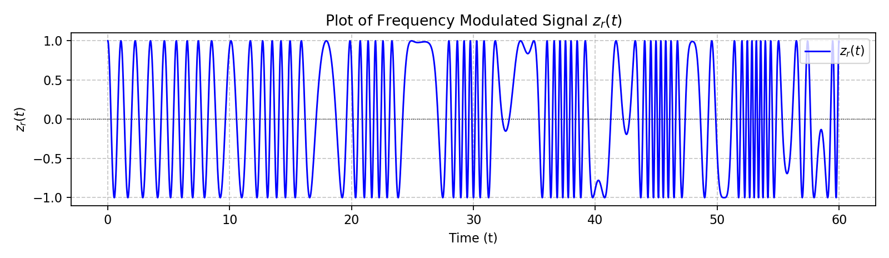
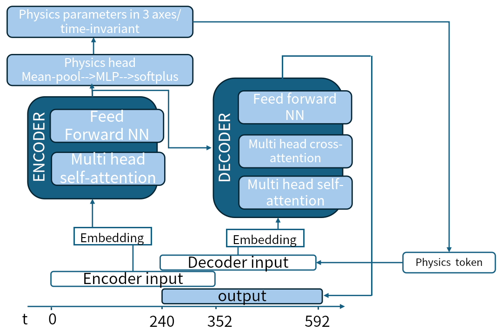
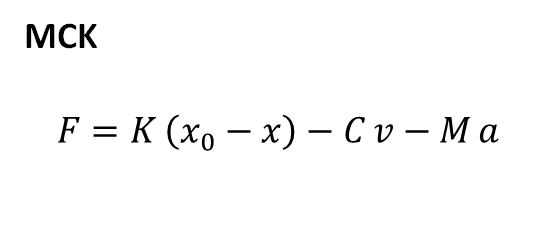
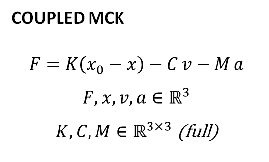
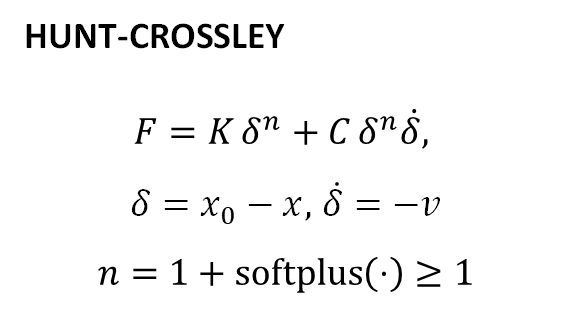
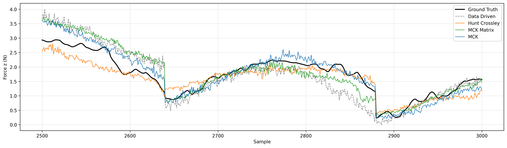
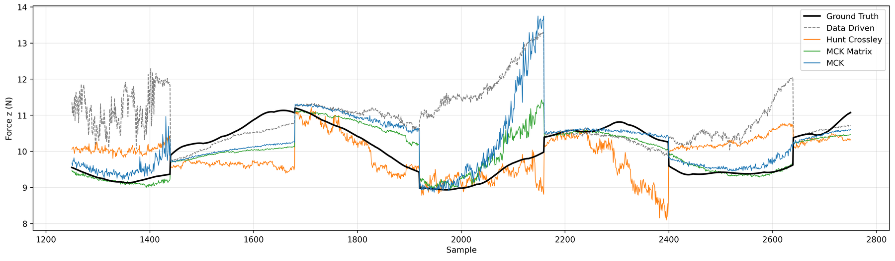

Lab – Mechanical Engineering Applications of Deep Learning (Prof. Loris Roveda)
Politecnico di Milano · 2026
Grade: 30 cum laude
Predicting contact forces ahead of time could help a robot adjust its motion before force builds up. We use the recent motion and force history, together with the robot's planned trajectory, to predict three-axis contact forces over the next 0.24 s. A simple contact model provides a physics-based force estimate to help an encoder–decoder Transformer make this prediction. We test the approach on a Franka Panda, including contact conditions not seen during training and recordings from another lab.
The prediction is in-context: the network uses the latest observations to account for the current contact conditions, without retraining its weights when the surface changes.
We recorded end-effector motion and force on a real Franka Panda under impedance control, with the end-effector pressing on a sponge and on a rigid table. The robot follows a chirp trajectory, an oscillating motion whose frequency changes over time, so we can observe the contact response at different frequencies. We also raised the sponge to test changes in contact height. A second dataset was provided by the IDSIA lab.

The encoder reads about 0.35 s of recent motion and measured force. This tells the network how the robot has been moving and how the surface has responded. The decoder combines this history with the planned position, velocity and acceleration to predict the upcoming contact force.
Estimating the contact parameters. A small network called the physics head reads the encoder's summary and estimates stiffness, damping and inertia (K, C, M) for each axis. These are effective parameters for the current window: they stay fixed within it and are estimated again as new observations arrive. The simplest contact model uses them in a spring–damper–mass equation:
Fphys = K (x0 − x) − C v − M a
Here x, v and a are position, velocity and acceleration, and x0 is the estimated resting position of the contact surface. We estimate x0 from low-force samples, with a position-based fallback when too few are available. During inference, this estimate uses the current history window.
Physics embedding. We combine the estimated parameters with the planned future motion to calculate a reference force. Its three components are added to the decoder's nine trajectory channels, giving twelve input channels at each time step. The decoder uses this reference, the trajectory and the encoded history to produce the final prediction, Fpred. This gives the network a physics-based starting point while leaving it room to capture behaviour that the simple contact model misses. In our earlier loss-only version, the force from the contact model was used in the training loss but was not supplied to the decoder.

Training. We use two loss terms: one makes the predicted force match the measurements, and the other encourages the contact model to agree with that prediction.
L = Huber(Fpred, F) + λ Huber(Fphys, sg[Fpred])
Here F is the measured force and λ = 0.25. For the physics loss, Fphys is calculated from the recorded actual motion. The stop-gradient operation sg[·] treats Fpred as a fixed target in this term, training the physics head and encoder to find parameters that explain it. We give the pressing direction, z, more weight and compute both losses in normalized coordinates.
Three contact models. We compare the spring–damper–mass model (MCK), which treats each axis independently, with coupled MCK, where motion along one axis can affect force along another. We also test Hunt–Crossley, which models a nonlinear relationship between compression and force using K, C and an exponent n. All three share the same overall framework, with different contact equations and parameter estimates.



We compared four models: the three physics-informed variants and a purely data-driven Transformer baseline. Each was trained in two settings: on PoliMi recordings alone, and on a mix of PoliMi and IDSIA data. We evaluated them on the training data and on separate test sets from both labs.
In the PoliMi tests, in-distribution (ID) means contact with the same type of sponge used for training, including raised-sponge runs. Out-of-distribution (OOD) tests replace the sponge with the rigid table. Testing PoliMi-trained models on IDSIA recordings also lets us examine transfer between labs.


Many thanks to Prof. Loris Roveda, who taught the Deep Learning Lab course at Politecnico di Milano, and to IDSIA for sharing their dataset. The interactive robot at the top is an illustration built from the Franka Panda model in MuJoCo Menagerie (Apache-2.0) and three.js.